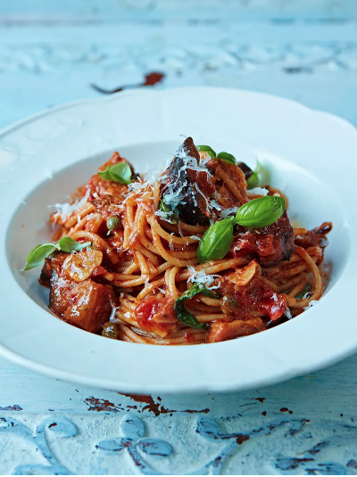

Spagehetti Alla Norma

Description
This is a beautifully simple, classic Sicilian pasta dish – it’s incredibly satisfying, full of flavour, and feels like a great big hug in a bowl. It also contains two of your five-a-day (bonus!), and the nutty-flavoured wholewheat pasta is much higher in fibre than the white refined stuff (double bonus!), so is a fantastic switch to make. The aubergine takes on the most amazing texture, the capers and pecorino add a lovely saltiness to the sweet tomato sauce and the chilli flakes give it a lovely warmth.
Ingredients
- 2 aubergines
- 3 cloves of garlic
- ½ a bunch of fresh basil , (15g)
- 1 teaspoon dried oregano
- 1 teaspoon dried chilli flakes
- olive oil
- 1 tablespoon baby capers
- 1 tablespoon red wine vinegar
- 1 x 400 g tin of quality plum tomatoes
- 320 g dried wholewheat spaghetti
- 50 g pecorino cheese
- extra virgin olive oil
Steps
- Chop the aubergines into rough 2cm chunks. Place into a colander in the sink, sprinkle with sea salt to draw out the moisture, then set aside for around 20 minutes.
- Peel and finely slice the garlic, then pick the basil leaves and finely slice the stalks.
- Rinse the aubergine and pat dry with kitchen paper, then place into a large bowl with the oregano, chilli flakes, a splash of olive oil and a pinch of sea salt and black pepper. Toss together well.
- Drizzle a splash of olive oil into a large frying pan over a medium heat. Once hot, add the aubergines in a single layer, and fry for 5 to 8 minutes, or until softened and golden, stirring occasionally – you may need to do this in batches.
- Add another splash of olive oil, followed by the garlic, capers and basil stalks, then cook for a further 2 minutes, or until golden.
- Stir in the vinegar and the tomatoes, breaking them up with the back of a spoon. Reduce the heat to low, and simmer gently for 15 to 20 minutes, or until thick and glossy.
- Cook the spaghetti in a pan of boiling salted water for 8 minutes or until al dente, which means that it should be soft enough to eat, but still have a bit of bite and firmness to it.
- Drain the spaghetti, reserving a cupful of the cooking water, then add a good splash of the reserved water to the aubergine sauce.
- Finely grate in half the cheese and tear in most of the reserved basil leaves. Add a lug of extra virgin olive oil, then season to taste.
- Add the spaghetti to the sauce and toss well, adding an extra splash of the reserved cooking water to loosen, if needed.
- Divide between bowls, grate over the remaining cheese and finish with the remaining basil scattered on top.